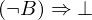
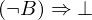
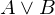
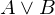

Show the Proof¶
In [1]:
import proveit
# Automation is not needed when only showing a stored proof:
proveit.defaults.automation = False # This will speed things up.
proveit.defaults.inline_pngs = False # Makes files smaller.
%show_proof
Out[1]:
| step type | requirements | statement | ||
|---|---|---|---|---|
| 0 | instantiation | 1, 2, 3 |  ⊢ ⊢  | |
 : : | ||||
| 1 | theorem | ⊢  | ||
| proveit.logic.boolean.implication.affirmViaContradiction | ||||
| 2 | assumption |  ⊢ ⊢  | ||
| 3 | hypothetical reasoning | 4 |  ⊢  ⊢  | |
| 4 | instantiation | 5, 6, 7, 8 |  ⊢ ⊢  | |
| : , : | ||||
| 5 | theorem | ⊢  | ||
| proveit.logic.boolean.disjunction.binaryOrContradiction | ||||
| 6 | assumption |  ⊢  ⊢  | ||
| 7 | assumption |  ⊢ ⊢  | ||
| 8 | assumption |  ⊢ ⊢  | ||